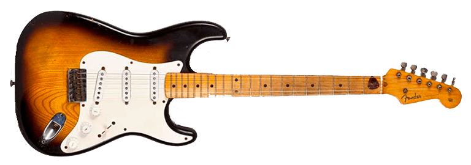
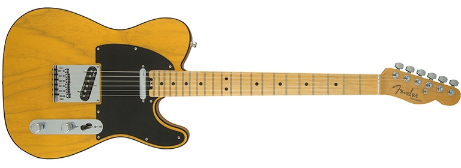

The Strat was an immediate hit with professional musicians when Leo Fender introduced it in
1954. While other solid body electrics had already been introduced to the world, many people
would argue that none of them looked as cool as the Stratocaster.
Leo Fender, alongside his trusted crew, realized they had hit upon a truly unique, world
changing design, simply by trying to “one-up” their competitor, Gibson. This attitude led to the
development of a distinctive image coupled with unique features that ultimately produced a
sound that could not be achieved with a Gibson.

Fender Telecaster
The Telecaster has a single cutaway, which makes it easy to identify and separate from its
rock ‘n’ roll brethren. There are other distinctive features that make it unique for a Fender and
made it popular with Country guitarists.
Instead of a Tremolo bridge, the Telecaster has what we call an “ashtray” bridge. This name
came about from the original metal covering over the bridge that players decided to remove
and use as an ashtray!

Gibson Les Paul
Yes, the Les Paul is a signature model for the late, great guitarist Les Paul. This signature
instrument is one of the few models to ever have other famous players have signature
versions of their own.
Ted McCarty, president of Gibson Guitar, tapped the famous guitarist Les Paul to help create
Gibson’s first mass-produced guitar. They wanted to create a higher-tiered expensive
instrument, and after a few prototypes they landed on a design that forever changed the
future of music.